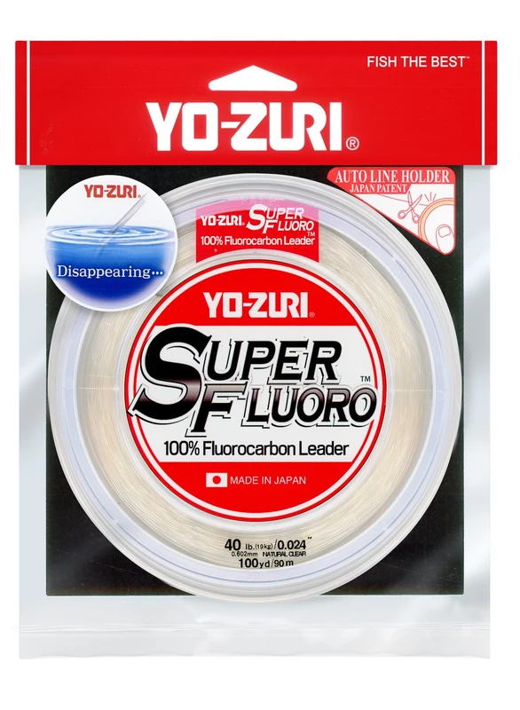

Yo-Zuri SuperFluoro Leader
Leader diameter chart & setup guide

SuperFluoro is Yo-Zuri's Natural Clear 100% fluorocarbon leader. The official page gives exact item codes and UPCs for 30-yard packages and a narrower 100-yard selection. This is leader supply, not a full-reel mainline recommendation.
- Construction
- 100% fluorocarbon leader in Natural Clear, made in Yo-Zuri's Fukuoka factory
- Listed strengths
- 4-200 lb
- Role
- Terminal leader
Is SuperFluoro Leader right for your setup?
SuperFluoro is a fluorocarbon leader option with sizes ranging from light connections to heavy offshore rigs. Choose diameter for the presentation, contact with cover and the knot you intend to tie. Plan the supply spool around individual leader lengths and replacements rather than the amount of main line on the reel.
Choose your Yo-Zuri SuperFluoro Leader
A package supplies multiple leaders
The package length is the amount you buy, not the leader length to attach to one rig. Allow extra line for knots, tag ends, trimming, and replacing damaged sections.
Amazon links may earn ReelCalc a commission. Check the exact strength, length, and product version before buying.
Yo-Zuri SuperFluoro Leader diameter chart
Only the source-reviewed strengths and package combinations listed below are included. Converted measurements are identified in the source notes.
| Strength | Inches | mm | Package length |
|---|---|---|---|
| 0.007 | 0.173 | 30 yd | |
| 0.008 | 0.215 | 30 yd | |
| 0.01 | 0.253 | 30 yd | |
| 0.011 | 0.275 | 30 yd | |
| 0.012 | 0.297 | 30 yd | |
| 0.013 | 0.331 | 30 yd, 100 yd | |
| 0.015 | 0.38 | 30 yd, 100 yd | |
| 0.018 | 0.457 | 30 yd | |
| 0.019 | 0.488 | 30 yd, 100 yd | |
| 0.024 | 0.602 | 30 yd, 100 yd | |
| 0.025 | 0.645 | 30 yd, 100 yd | |
| 0.029 | 0.747 | 30 yd, 100 yd | |
| 0.033 | 0.847 | 30 yd, 100 yd | |
| 0.038 | 0.953 | 30 yd | |
| 0.043 | 1.087 | 30 yd | |
| 0.048 | 1.215 | 30 yd | |
| 0.061 | 1.545 | 30 yd |
Choosing and using SuperFluoro Leader
The verified 4-12 lb rows are the light end of this leader range. Choose them for the presentation and tackle rather than assuming that any thin leader is suitable for structure or powerful fish.
The 100-yard table specifically lists 15, 20, 30, 40, 50, 60 and 80 lb. There is no 25 lb/100 yd row, even though 25 lb is offered in 30 yards.
The raw 300 lb entry pairs 1.885 mm with 0.075 inch. Those values exceed normal combined rounding at the displayed precision; that strength is withheld pending clarification, while the verified range through 200 lb remains available.
Specification-based guidance, not a ReelCalc hands-on performance test.
Choose a package by replacement demand
Count finished leader lengths plus knot tails, trimming and replacements. A 30-yard spool does not yield thirty one-yard leaders once normal tying losses are included.
Keep the package code with the strength
Use the exact item code when buying a 100-yard package. The wider 30-yard range does not imply every strength has a larger option.
Keep leader and reel supply separate
Use the mainline diameter for the reel capacity estimate. Leader length is an independent rigging and replenishment decision.
Plan the line on your reel separately
A short terminal leader is not the working line that fills your spool. Use the actual main line in the calculator or Setup Wizard. A long topshot that occupies substantial spool space needs its own capacity plan.
SuperFluoro Leader questions, answered
Is SuperFluoro 100% fluorocarbon?
Yes. Yo-Zuri expressly identifies it as a Japanese 100% fluorocarbon leader made in its Fukuoka factory.
Can I buy 25 lb in 100 yards?
No such row was verified on the official page. The verified 25 lb package is 30 yards.
Why is 300 lb withheld?
The published 1.885 mm and 0.075 inch pair disagrees beyond the rounding intervals. Neither unit has been silently selected as authoritative.
Are the MSRP and savings claims current?
This guide does not represent the page's historical MSRP columns or comparative savings claims as current retail prices.
How should I compare it with TopKnot Leader?
Compare the exact strength and diameter. Matching brand or leader role does not establish identical formulation or package choices.
Specifications & sources
Official sources retrieved September 13, 2026. Both inch and millimeter values are published independently and retained within rounding tolerance. UPC/item-code tables retained. 300 lb 1.885 mm/0.075 in withheld for numerical conflict. 60 lb/100 yd description typo ends in 60YD; item code, table heading and pound-test column consistently identify 60LB/100YD, and are retained as evidence. Package options are not a stock or price guarantee.
- Official Yo-Zuri specification source Exact numeric rows, package identity and model positioning.